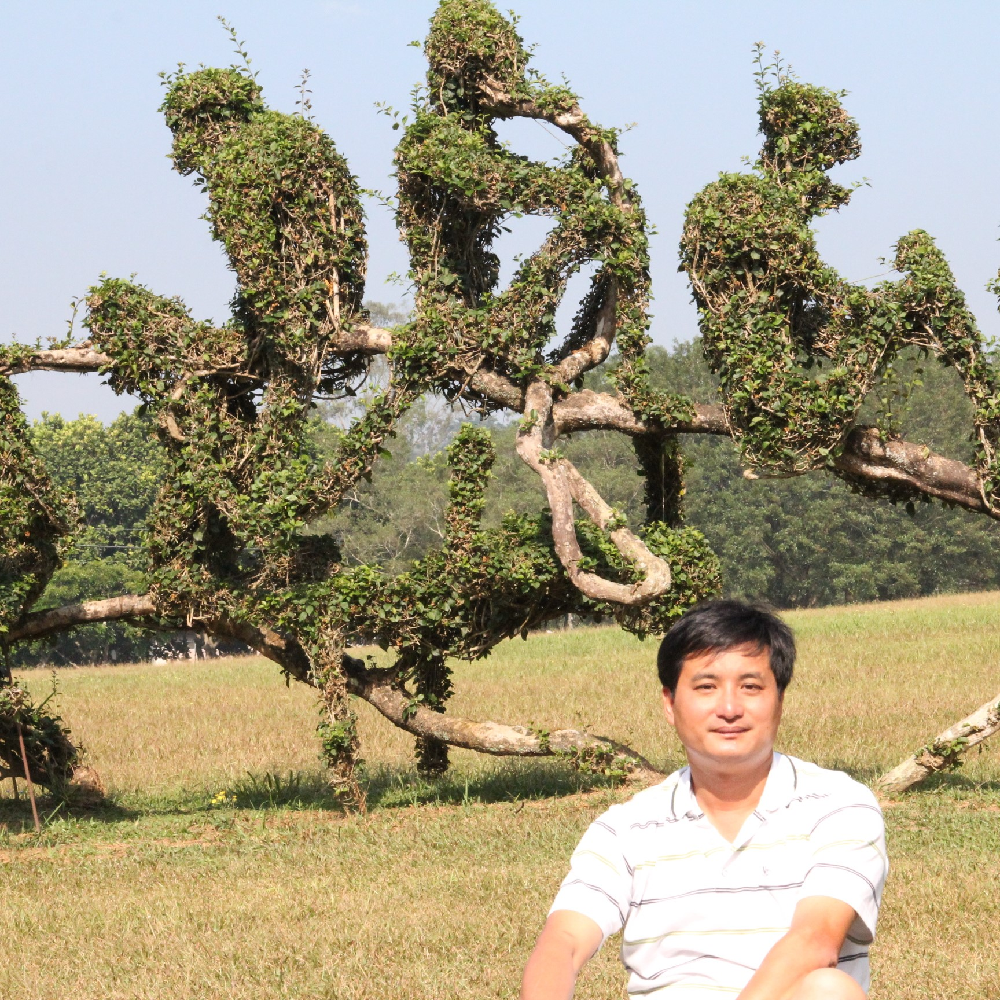

中心成員
中心主持人 |
苗志銘 Jr-Ming Miao國立屏東科技大學 生物機電工程系教授系所：生物機電工程系分機：(08)770-3202 #7566電子郵件：jmmiao@mail.nh5ust.edu.tw研究專長：熱流分析、數值模擬、風機設計與特性分析、智慧農業 |
研究助理 |
吳振源 Chen-Yuan Wu國立屏東科技大學 生物機電工程系助理教授系所：生物機電工程系分機：(08)770-3202 #7566電子郵件：qc12345@mail.nh5ust.edu.tw研究專長：計算流體力學、氣渦輪機熱流分析、智慧農業 |